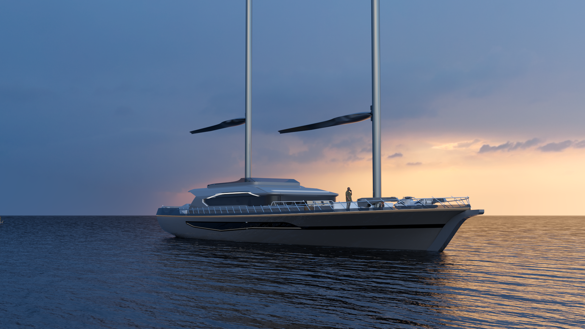
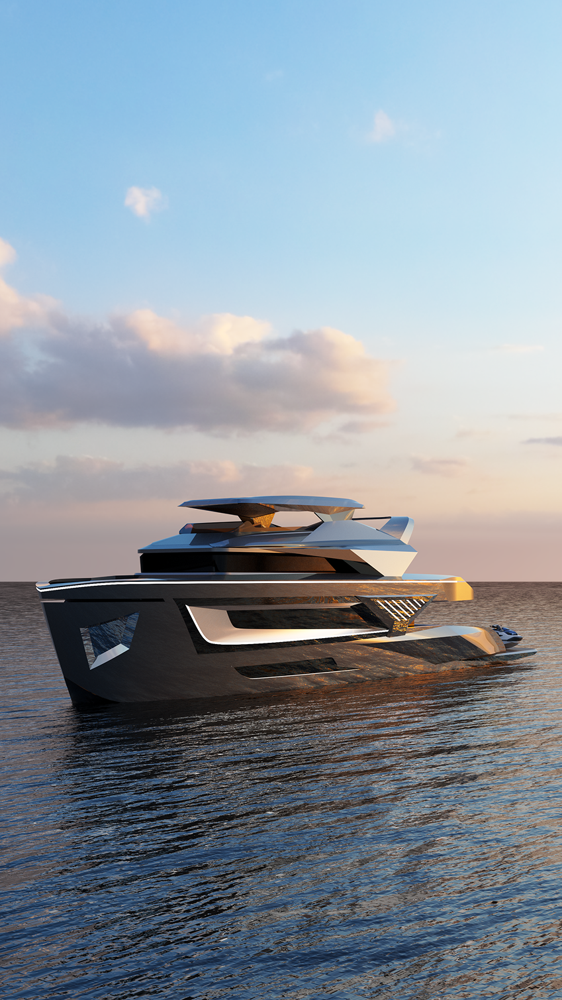
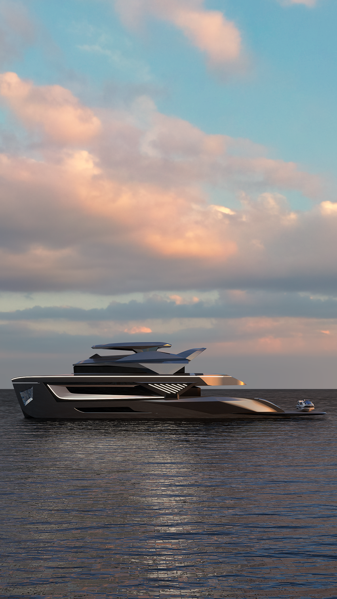
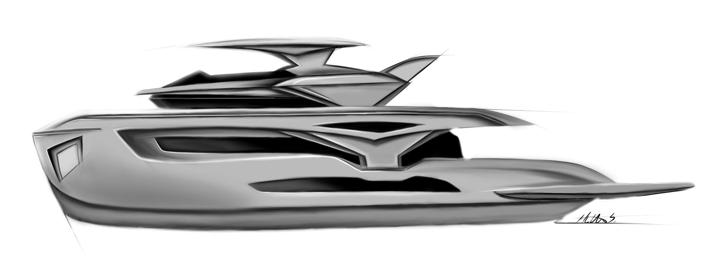
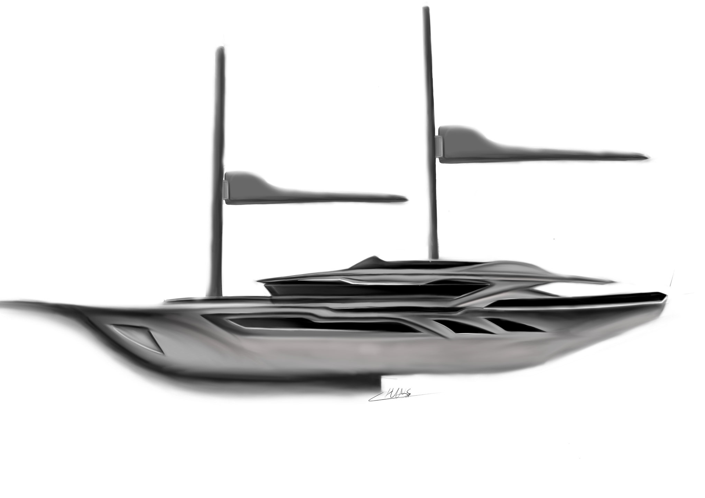

Yat Tasarımı
2021–2022 · Salmakis Yachts / Neta Marine
42,5m Motor Yat & 45m Gulet
Princess Melda
Aşağı Kaydır
Salmakis Yachts — 42,5 Metre Motor Yat | Princess Melda
Staj sürecimde, lüks yat tasarımı ve üretim süreçlerini bütüncül bir bakış açısıyla deneyimleme fırsatı buldum. 42,5 metre motor yat projesi kapsamında; konsept geliştirme, 3D modelleme, iç mekân kurgusu ve görselleştirme aşamalarında aktif rol aldım.
Projede, modern yat tasarımının gerektirdiği estetik ve fonksiyonelliği bir araya getirerek; dış form dilinden iç mekân detaylarına kadar kullanıcı deneyimini ön planda tutan çözümler geliştirdim. Güverte planlaması, yaşam alanlarının organizasyonu ve malzeme seçimleri gibi kritik konularda tasarım kararlarına katkı sağladım.
Aynı zamanda yüksek kaliteli render ve sunum görselleri üreterek projenin görsel anlatımını güçlendirdim. Bu süreç, teknik bilgi ile tasarım estetiğini birleştirme ve gerçek üretim koşullarına uygun çözümler geliştirme açısından önemli bir deneyim kazandırdı.








Form arayışından detaylı 3D modele kadar tüm geliştirme aşamalarında aktif rol; Rhino tabanlı yüzey çalışmaları ile üretime uygun, rafine bir dış form dili.
Kabinler, salon, köprü ve teknik hacimlerin organizasyonu; yaşam alanlarının ergonomik dizilimi, sirkülasyon ve doğal ışık dengesinin gözetildiği iç plan.
Doğal ahşap, açık tonlu döşemeler ve metal aksamların ölçülü buluşması; lüks yat estetiğinin gerçek üretim koşullarıyla uyumlu, dayanıklı ve şık bir paletle yorumlanması.
KeyShot ve Figma ile üretilmiş yüksek kaliteli render ve sunum görselleri; projenin görsel anlatımını güçlendirerek karar süreçlerini hızlandıran sinematik kareler.